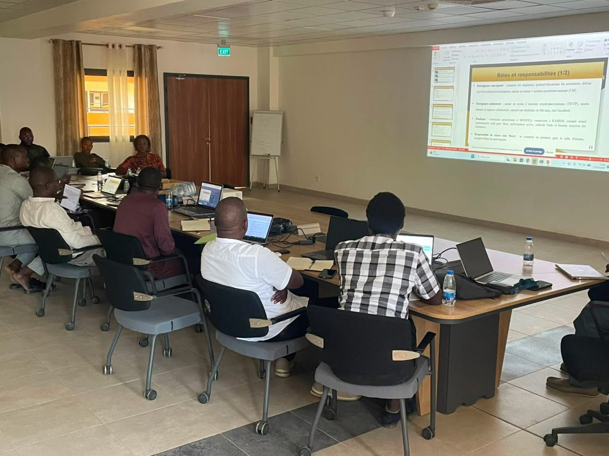
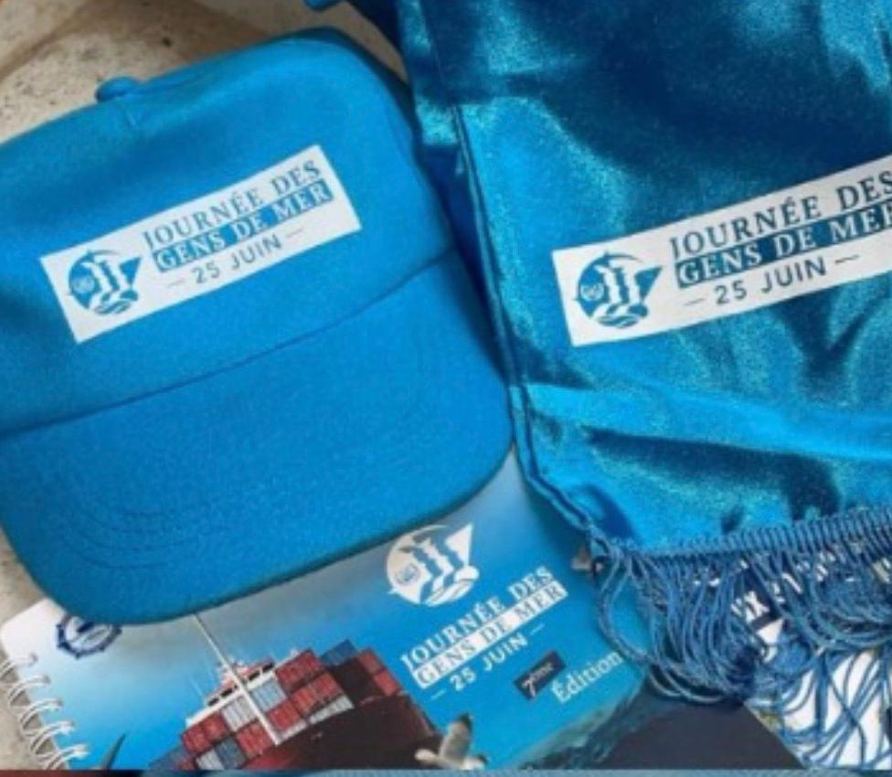
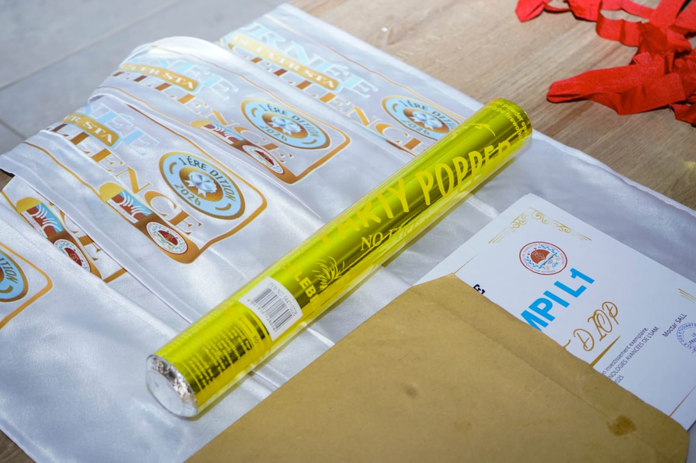
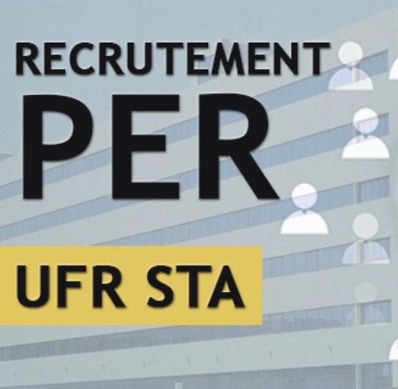

Journee d'information
L'UFR STA organise une demi-journée d'information, de partage et de concentration reunissant les Enseignant-Chercheur et le PATS.
Lire plusLes dernières informations de l'UFR STA

L'UFR STA organise une demi-journée d'information, de partage et de concentration reunissant les Enseignant-Chercheur et le PATS.
Lire plus
Les etudiants de l'UFR STA ont pris part a cette importante journée organisée par l'ANAM.
Lire plus
L'amicale des etudiants de l'UFR STA a organisé une grande journée d'Excellence dédiée a la celebration du merite academique.
Lire plus
Le recteur de l'UAM recrute pour le compte de l'UFR STA un Enseignant-Chercheur en Mathematiques appliquées